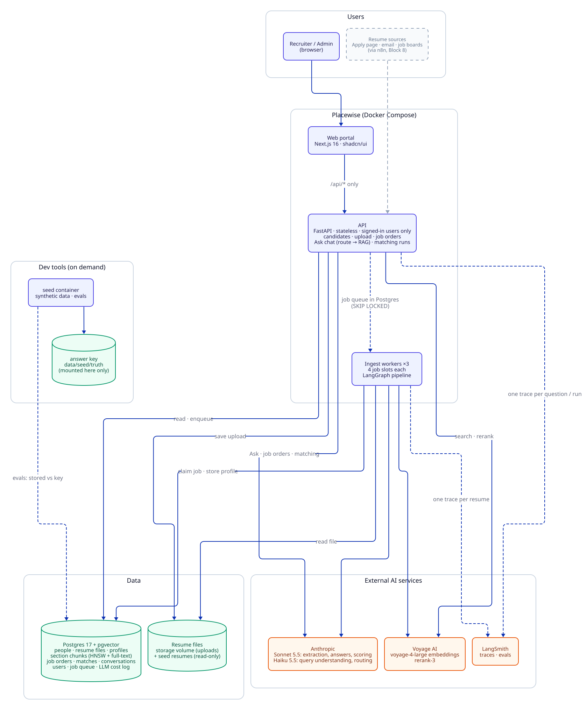
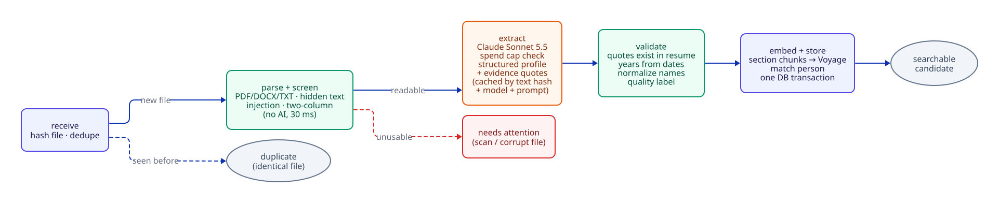
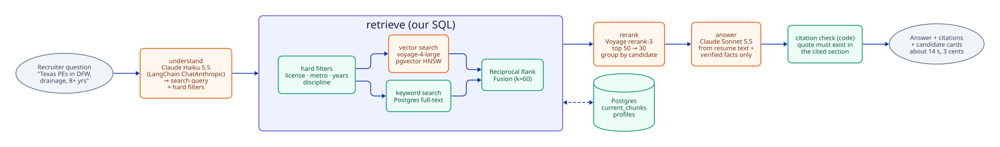

Work / Placewise
Case study · AI recruiting
Placewise: an AI layer that turns résumés into evidence-backed shortlists
Recruiters at architecture, engineering and construction staffing firms spend hours reading résumés against vague job notes. Placewise sits on top of their existing ATS and does the first pass: it parses every résumé, finds the right candidates for a role, and backs every recommendation with the résumé line that proves it.
What it does
- Intake: PDF, DOCX and text résumés from an upload page, a watched folder or an n8n webhook, handled by a Postgres job queue and workers.
- Understanding: a LangGraph pipeline per résumé (dedupe → parse and screen → Claude structured extraction → code validation → embeddings).
- Job orders: messy recruiter notes become a structured job order, and the system asks clarifying questions when something is missing.
- Matching: hard filters (license, state, years) plus hybrid search and reranking find candidates, and each one is scored with quoted evidence.
- Ask: a conversational assistant answers questions about candidates and roles, and every answer cites résumé lines.
- Human in control: shortlists go through approve/reject. Nothing is ever sent automatically.

Ingest: making messy résumés trustworthy
Real résumé folders are full of scans, two-column layouts, duplicates, corrupt files and occasionally hidden text written to manipulate an AI screener. The ingest graph treats every file as untrusted:
- Hidden and injected text is detected and stripped before any model sees it.
- Claude returns a structured profile, then code validates the facts (dates, years of experience, license claims) instead of trusting the model.
- Extraction results are cached on the cleaned text, so re-processing a file costs nothing.
- Every model call is logged with tokens, latency and cost. A daily spend cap pauses work rather than failing it.

On the evaluation set, unusable and adversarial files were caught at 100% precision and recall, and flawed-résumé precision rose from 57% to 94% after moving extraction from a small model to Claude Sonnet, at about $0.02 per résumé.
Retrieval: from 48% to 89% recall
Pure vector search missed most qualified candidates, because job requirements like "PE licensed in Texas, 10+ years" are hard constraints, not semantic similarity. Each layer was added only when the evaluation showed it helped:
| Retrieval setup | recall@10 | precision@10 | MRR |
|---|---|---|---|
| Vector search only | 48% | – | – |
| + hard filters | 84% | – | – |
| + hybrid keyword search + rerank | 89% | 98% | 1.00 |
Measured against an answer key the API never sees, on a 597-résumé test set with 15 job orders, including scanned, corrupt, duplicate and prompt-injection files.

Matching you can audit
For each candidate, the model must quote the résumé line that supports each requirement. Code checks that every quote really exists in the résumé, and code (not the model) computes the final score. Scoring is blind: names, addresses and graduation years are removed first. Result: 97.6% submit precision, and a recruiter can see exactly why each person made the list.
Production engineering
Deployment
- Google Cloud VM running the Docker Compose stack behind Caddy and Cloudflare
- GitHub Actions: CI on every PR, auto-deploy from
main, verify and roll back automatically - Uptime and budget alerts, and a public spend cap
Cost and quality controls
- Prompt caching and a Postgres response cache (repeat questions cost $0)
- LangSmith tracing and versioned prompts
- 21 architecture decision records documenting each trade-off
Some of the decisions recorded in the repo: code validates LLM facts (ADR 013); own retrieval SQL instead of a generic retriever (ADR 017); a Postgres SKIP LOCKED job queue instead of a separate broker (ADR 010); auto-deploy with rollback (ADR 020); Claude cost caching (ADR 021).
Stack
Want something like this for your data?
The same pattern (untrusted documents in, validated structured data, filtered hybrid retrieval, evidence-backed answers) fits contracts, support tickets, research papers and more.